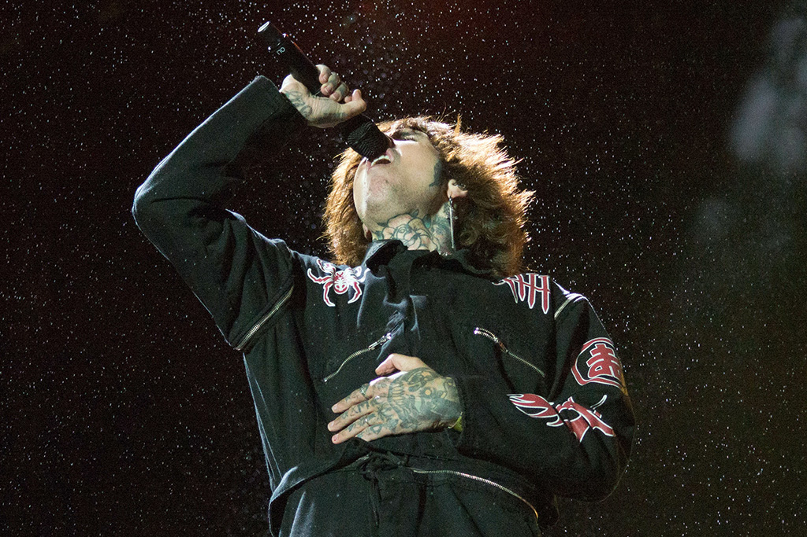

PERSONAL INFORMATION
Height: 1.85m
Vocal Type: Tenor, guttural
Date of Birth: November 20, 1986
Nationality: Brazilian
Place of Birth: Ashford, Kent, England
Profession: Vocalist and songwriter
Years active: 2003-present
Años activo: 2003-presente

PERSONAL LIFE
During the Leeds Festival in 2013, Sykes revealed that he had a history of drug abuse and addiction.
Sykes has stated that he is an atheist: "I don't believe in God. I was asked to believe in him when I was in such a bad place.
I couldn't understand why I needed a god or, in my opinion, something that doesn't exist."
In 2015, he founded the charity organization "Drop 4 Drop," which works to provide access
to clean water to communities in need around the world.
He has been married twice, first in 2015 to a model and tattoo artist, but they divorced in May 2016.
His second wedding was in July 2017, to Alissa Salls, a Brazilian model and his current partner.
In addition to his music career, Sykes has been involved in various creative projects. He is the owner of the clothing brand
Drop Dead Clothing, which he founded in 2005. He has also collaborated with other fashion brands and has designed several pieces
of clothing for his band.